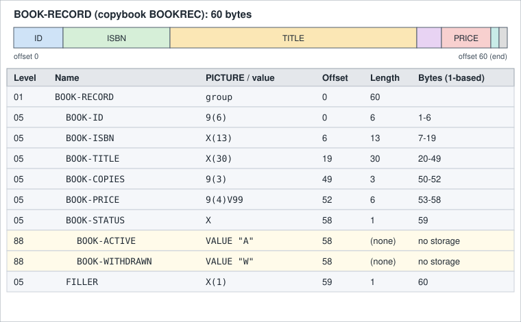

Data Division and Level Numbers
|
This content was generated with the assistance of AI and should be verified against the official documentation before being relied on in production. |
This page is written against ISO/IEC 1989:2023 (edition 3, January 2023; a 4th edition is upcoming), GnuCOBOL 3.2 and IBM
Enterprise COBOL for z/OS 6.5, checked on 2026-10-20. Every program below was compiled with cobc -x -Wall (GnuCOBOL 3.2.0)
and run. The ones presented as working compiled without warnings (also under -std=ibm), and the deliberately wrong ones
show the real diagnostics. They use the Circulation library scenario of this section (copybooks BOOKREC and MEMBREC,
file BOOKMAST). z/OS-only statements are labelled as not run here.
The data division is where every item a program touches is declared: its name, its position in a record hierarchy, its
size and its format. COBOL has no local variables declared next to the code that uses them. Everything lives in one
declarative block, and the level numbers are what give that block its structure. This page covers sections, level numbers,
group and elementary items, qualification and the three storage clauses GLOBAL, EXTERNAL and BASED. What goes after
the level number is covered elsewhere: The PICTURE Clause,
USAGE and Numeric Representation,
VALUE, INITIALIZE and Condition Names and
REDEFINES, RENAMES and TYPEDEF. The overall program
skeleton is on Program Structure and Divisions.
Sections of the data division
The data division is optional and is made of sections that must appear in this order. Each section can be omitted when a program has nothing to put in it.
| Section | What it describes | Lifetime of the storage |
|---|---|---|
|
The record areas of the files named in |
Allocated for the run unit; its contents are meaningful only while the file is open and after a successful read or before a write |
|
The program’s own variables, constants and tables |
Allocated when the program is first called and kept until the run unit ends, so values survive between calls. The
initial contents come from |
|
Variables that must be fresh on every call, which is also what makes a program able to call itself recursively |
Allocated and reinitialised from |
|
Items that describe storage owned by someone else: the parameters of |
None; it addresses the caller’s storage (or a |
|
Full-screen layouts for |
Static description |
|
Report groups for the Report Writer ( |
Static description; see Reports and the Report Writer |
Enterprise COBOL describes the same four central sections in its DATA DIVISION overview, and has no SCREEN section.
Object-oriented programs add the same
sections to class definitions, factory definitions and methods (see
Object-Oriented COBOL).
The program below makes the lifetime difference visible. COUNTER is called three times by LIFE.
IDENTIFICATION DIVISION.
PROGRAM-ID. LIFE.
DATA DIVISION.
WORKING-STORAGE SECTION.
77 WS-I PIC 9 VALUE 0.
PROCEDURE DIVISION.
MAIN-PARA.
PERFORM VARYING WS-I FROM 1 BY 1 UNTIL WS-I > 3
CALL "COUNTER"
END-PERFORM
STOP RUN.
END PROGRAM LIFE.
IDENTIFICATION DIVISION.
PROGRAM-ID. COUNTER.
DATA DIVISION.
WORKING-STORAGE SECTION.
77 WS-KEPT PIC 9(3) VALUE 0.
LOCAL-STORAGE SECTION.
77 LS-FRESH PIC 9(3) VALUE 0.
PROCEDURE DIVISION.
MAIN-PARA.
ADD 1 TO WS-KEPT
ADD 1 TO LS-FRESH
DISPLAY "WORKING-STORAGE " WS-KEPT
" LOCAL-STORAGE " LS-FRESH
GOBACK.
END PROGRAM COUNTER.Output:
WORKING-STORAGE 001 LOCAL-STORAGE 001
WORKING-STORAGE 002 LOCAL-STORAGE 001
WORKING-STORAGE 003 LOCAL-STORAGE 001Source: IBM, DATA DIVISION overview
The WORKING-STORAGE counter keeps counting and the LOCAL-STORAGE counter starts again at its VALUE on each call.
Note that LOCAL-STORAGE costs a reallocation on every call, so use it for recursive programs and re-entrant code and
keep ordinary state in WORKING-STORAGE. In GnuCOBOL a program that has a LOCAL-STORAGE SECTION is treated as
recursive.
The FILE SECTION in a real program
A file’s record description normally comes from a copybook placed directly under the FD, so that every program reading
BOOKMAST sees the same layout. This program reads the four sample books.
IDENTIFICATION DIVISION.
PROGRAM-ID. FILESEC.
ENVIRONMENT DIVISION.
INPUT-OUTPUT SECTION.
FILE-CONTROL.
SELECT BOOK-FILE ASSIGN TO "BOOKMAST"
ORGANIZATION IS LINE SEQUENTIAL.
DATA DIVISION.
FILE SECTION.
FD BOOK-FILE.
COPY BOOKREC.
WORKING-STORAGE SECTION.
77 WS-EOF PIC X VALUE "N".
88 AT-END-OF-BOOKS VALUE "Y".
PROCEDURE DIVISION.
MAIN-PARA.
OPEN INPUT BOOK-FILE
PERFORM UNTIL AT-END-OF-BOOKS
READ BOOK-FILE
AT END SET AT-END-OF-BOOKS TO TRUE
NOT AT END
DISPLAY BOOK-ID " " BOOK-TITLE " " BOOK-COPIES
END-READ
END-PERFORM
CLOSE BOOK-FILE
STOP RUN.Output:
000001 DATA STRUCTURES 003
000002 COBOL BASICS 002
000003 BATCH PROCESSING 001
000004 OLD LEDGERS 001Source: GnuCOBOL 3.2 manual
The SELECT clause and the FD clauses are explained on the file pages. Here the point is only that BOOK-RECORD, a
level 01 entry from the copybook, sits under the FD, and so it is the record area: there is no separate declaration of
the buffer.
Level numbers
A data description entry starts with a level number. It tells the compiler where the entry sits in the hierarchy.
| Level | Meaning |
|---|---|
|
The record itself, the most inclusive level. It can be a group or an elementary item and must start in Area A.
A level 01 item is the unit that is allocated and that |
|
Group and elementary items inside a record. Higher numbers mean less inclusive items, and the numbers need not be
consecutive. They can start in Area A or Area B. A single digit may stand for |
|
A |
|
An independent item: not part of any record and not subdivided. It must start in Area A, and it exists only in
|
|
A condition-name attached to the value or values of the item above it. It owns no storage. Covered on VALUE, INITIALIZE and Condition Names. |
A group item includes every entry that follows it until an entry with a level number less than or equal to the group’s
own is met. That is the whole rule: nothing is declared as "end of group", the next entry of the same or a lower level
closes it. A group has no PICTURE. An item with a PICTURE (or one of the numeric usages that implies a size) is
elementary.
The record layout of BOOK-RECORD
The copybook BOOKREC describes the 60 byte book record. The figure shows each entry with its level, PICTURE, offset and
length, and a proportional bar of the same bytes.

Offsets count from zero and are the sum of the lengths of everything before the item. The two 88 entries share the byte
of BOOK-STATUS and add no storage, and the trailing FILLER pads the record to a round 60 bytes.
Which of these sizes the compiler computed can be checked with FUNCTION LENGTH.
IDENTIFICATION DIVISION.
PROGRAM-ID. LAYOUT.
DATA DIVISION.
WORKING-STORAGE SECTION.
COPY BOOKREC.
77 WS-LEN PIC 9(3).
PROCEDURE DIVISION.
MAIN-PARA.
MOVE 1 TO BOOK-ID
MOVE "9780000000002" TO BOOK-ISBN
MOVE "Analytical Engines" TO BOOK-TITLE
MOVE 7 TO BOOK-COPIES
MOVE 24.50 TO BOOK-PRICE
SET BOOK-ACTIVE TO TRUE
COMPUTE WS-LEN = FUNCTION LENGTH(BOOK-RECORD)
DISPLAY "group length : " WS-LEN
COMPUTE WS-LEN = FUNCTION LENGTH(BOOK-ID)
DISPLAY "BOOK-ID length : " WS-LEN
COMPUTE WS-LEN = FUNCTION LENGTH(BOOK-TITLE)
DISPLAY "BOOK-TITLE length : " WS-LEN
COMPUTE WS-LEN = FUNCTION LENGTH(BOOK-PRICE)
DISPLAY "BOOK-PRICE length : " WS-LEN
DISPLAY "[" BOOK-RECORD "]"
STOP RUN.Output:
group length : 060
BOOK-ID length : 006
BOOK-TITLE length : 030
BOOK-PRICE length : 006
[0000019780000000002Analytical Engines 007002450A ]Source: GnuCOBOL 3.2 manual
The sum of the elementary lengths (6 + 13 + 30 + 3 + 6 + 1 + 1) is 60. The price shows as 002450 because PIC 9(4)V99
stores six digits and the decimal point is only implied by the V. Nothing in the record tells a reader where the point
is except the picture, which is why the copybook and the picture are the contract between programs. See
The PICTURE Clause.
Non-consecutive and mixed level numbers
Level numbers only need to increase with depth. A program may use 05, 10, 20 as it likes, and two siblings may even
be numbered differently. This example uses the Circulation loan key with a non-consecutive 10/20 pair, an unnamed
FILLER, a 77 item and a 66 regrouping.
IDENTIFICATION DIVISION.
PROGRAM-ID. LEVELS.
DATA DIVISION.
WORKING-STORAGE SECTION.
77 WS-LEN PIC 9(3).
01 LOAN-LINE.
05 LINE-KEY.
10 LINE-MEMBER PIC 9(6) VALUE 100.
10 LINE-BOOK PIC 9(6) VALUE 1.
05 LINE-DATE.
20 LINE-YEAR PIC 9(4) VALUE 2026.
20 LINE-MONTH PIC 99 VALUE 10.
20 LINE-DAY PIC 99 VALUE 20.
05 FILLER PIC X(2) VALUE SPACES.
05 LINE-TYPE PIC X VALUE "O".
88 LINE-CHECKOUT VALUE "O".
66 LINE-WHO-WHAT RENAMES LINE-MEMBER THRU LINE-BOOK.
PROCEDURE DIVISION.
MAIN-PARA.
COMPUTE WS-LEN = FUNCTION LENGTH(LOAN-LINE)
DISPLAY "LOAN-LINE (" WS-LEN "): [" LOAN-LINE "]"
COMPUTE WS-LEN = FUNCTION LENGTH(LINE-DATE)
DISPLAY "LINE-DATE (" WS-LEN "): [" LINE-DATE "]"
DISPLAY "renamed: [" LINE-WHO-WHAT "]"
IF LINE-CHECKOUT
DISPLAY "checkout"
END-IF
STOP RUN.Output:
LOAN-LINE (023): [00010000000120261020 O]
LINE-DATE (008): [20261020]
renamed: [000100000001]
checkoutThe Enterprise COBOL manual also shows siblings given different numbers at the same depth (05 EMPLOYEE-NAME next to
04 EMPLOYEE-ADDRESS, then children numbered 10 and 08) and says the compiler renumbers the levels relatively.
GnuCOBOL 3.2 does not accept that style. The following program, a direct transcription of the idea, is deliberately
non-portable.
IDENTIFICATION DIVISION.
PROGRAM-ID. MIXED.
DATA DIVISION.
WORKING-STORAGE SECTION.
01 LOAN-LINE.
05 LINE-KEY.
10 LINE-MEMBER PIC 9(6) VALUE 100.
10 LINE-BOOK PIC 9(6) VALUE 1.
04 LINE-DATE.
08 LINE-YEAR PIC 9(4) VALUE 2026.
08 LINE-MONTH PIC 99 VALUE 10.
08 LINE-DAY PIC 99 VALUE 20.
PROCEDURE DIVISION.
MAIN-PARA.
DISPLAY LINE-YEAR "-" LINE-MONTH "-" LINE-DAY
STOP RUN.Output with the default dialect (an error):
mixed.cob:9: error: no previous data item of level 04
7 | 10 LINE-MEMBER PIC 9(6) VALUE 100.
8 | 10 LINE-BOOK PIC 9(6) VALUE 1.
9 > 04 LINE-DATE.
10 | 08 LINE-YEAR PIC 9(4) VALUE 2026.
11 | 08 LINE-MONTH PIC 99 VALUE 10.Under -std=ibm the same text is reduced to a warning and the program runs:
IDENTIFICATION DIVISION.
PROGRAM-ID. MIXED.
DATA DIVISION.
WORKING-STORAGE SECTION.
01 LOAN-LINE.
05 LINE-KEY.
10 LINE-MEMBER PIC 9(6) VALUE 100.
10 LINE-BOOK PIC 9(6) VALUE 1.
04 LINE-DATE.
08 LINE-YEAR PIC 9(4) VALUE 2026.
08 LINE-MONTH PIC 99 VALUE 10.
08 LINE-DAY PIC 99 VALUE 20.
PROCEDURE DIVISION.
MAIN-PARA.
DISPLAY LINE-YEAR "-" LINE-MONTH "-" LINE-DAY
STOP RUN.Output with -std=ibm (the warning is still printed):
2026-10-20
mixed.cob:9: warning: no previous data item of level 04 [-Wothers]
7 | 10 LINE-MEMBER PIC 9(6) VALUE 100.
8 | 10 LINE-BOOK PIC 9(6) VALUE 1.
9 > 04 LINE-DATE.
10 | 08 LINE-YEAR PIC 9(4) VALUE 2026.
11 | 08 LINE-MONTH PIC 99 VALUE 10.Source: GnuCOBOL 3.2 manual
Write consecutive, consistently numbered siblings. Skipping numbers (05, 10, 15) leaves room to insert a level later
and is portable. Using different numbers for siblings is legal on z/OS but gives a warning or error elsewhere and gains
nothing.
Level numbers beyond the legal set are plain syntax errors. A 50 level is not a level at all, and GnuCOBOL’s
resynchronisation produces a cascade, of which the first line is the useful one.
IDENTIFICATION DIVISION.
PROGRAM-ID. BADLEVEL.
DATA DIVISION.
WORKING-STORAGE SECTION.
01 LOAN-LINE.
05 LINE-KEY PIC 9(6).
50 TOO-DEEP PIC X.
01 LOAN-LINE-2.
10 LINE-KEY PIC 9(6).
PROCEDURE DIVISION.
MAIN-PARA.
STOP RUN.Output (deliberately wrong source; the first line is the real error):
badlevel.cob:7: error: PROCEDURE DIVISION header missing
5 | 01 LOAN-LINE.
6 | 05 LINE-KEY PIC 9(6).
7 > 50 TOO-DEEP PIC X.
8 | 01 LOAN-LINE-2.
9 | 10 LINE-KEY PIC 9(6).
badlevel.cob:7: error: syntax error, unexpected Identifier
badlevel.cob:8: error: syntax error, unexpected Identifier, expecting SECTION or .
6 | 05 LINE-KEY PIC 9(6).
7 | 50 TOO-DEEP PIC X.
8 > 01 LOAN-LINE-2.
9 | 10 LINE-KEY PIC 9(6).
10 | PROCEDURE DIVISION.
badlevel.cob:8: note: unknown statement '01'
badlevel.cob:9: error: syntax error, unexpected Identifier, expecting SECTION or .
7 | 50 TOO-DEEP PIC X.
8 | 01 LOAN-LINE-2.
9 > 10 LINE-KEY PIC 9(6).
10 | PROCEDURE DIVISION.
11 | MAIN-PARA.
badlevel.cob:9: note: unknown statement '10'
badlevel.cob:10: error: syntax error, unexpected PROCEDURE
8 | 01 LOAN-LINE-2.
9 | 10 LINE-KEY PIC 9(6).
10 > PROCEDURE DIVISION.
11 | MAIN-PARA.
12 | STOP RUN.Source: GnuCOBOL 3.2 manual
Group items are just bytes
A group item has no type of its own. In MOVE and in comparisons it is treated as one alphanumeric string, the
concatenation of its subordinates exactly as they are stored. No editing and no conversion takes place, so a numeric
elementary item inside the group moves as its stored digit characters, not as a number. The Enterprise COBOL manual calls
this an alphanumeric group and says the group is processed as if its usage were DISPLAY, whatever the usage of the
items inside it. The exception is MOVE CORRESPONDING and the other CORRESPONDING forms, which look inside and handle
the subordinate items one by one.
That makes a group move a block copy of bytes. It is the way a whole record is read into a work area, saved, restored or written, and it is also the reason a group move can corrupt a numeric field: moving spaces to a group overwrites packed or zoned digits with blanks, and the numeric fields inside it are no longer numeric.
IDENTIFICATION DIVISION.
PROGRAM-ID. GMOVE.
DATA DIVISION.
WORKING-STORAGE SECTION.
COPY BOOKREC.
01 BOOK-IMAGE PIC X(60).
01 BOOK-SNAPSHOT.
05 SNAP-ID PIC X(6).
05 SNAP-REST PIC X(54).
PROCEDURE DIVISION.
MAIN-PARA.
MOVE 42 TO BOOK-ID
MOVE "9780000000042" TO BOOK-ISBN
MOVE "Notes on Compilers" TO BOOK-TITLE
MOVE 3 TO BOOK-COPIES
MOVE 19.99 TO BOOK-PRICE
SET BOOK-WITHDRAWN TO TRUE
MOVE BOOK-RECORD TO BOOK-IMAGE
MOVE BOOK-IMAGE TO BOOK-SNAPSHOT
DISPLAY "image : [" BOOK-IMAGE "]"
DISPLAY "snap id : [" SNAP-ID "]"
MOVE SPACES TO BOOK-RECORD
DISPLAY "id after MOVE SPACES to the group: [" BOOK-ID "]"
MOVE BOOK-IMAGE TO BOOK-RECORD
DISPLAY "restored id, price: " BOOK-ID " " BOOK-PRICE
STOP RUN.Output:
image : [0000429780000000042Notes on Compilers 003001999W ]
snap id : [000042]
id after MOVE SPACES to the group: [ ]
restored id, price: 000042 0019.99Source: IBM, Enterprise COBOL for z/OS 6.5 Language Reference (PDF), "Classes and categories of group items"
MOVE SPACES TO BOOK-RECORD filled BOOK-ID with blanks, a value that is not a valid number, and restoring the saved
image made the numbers valid again. The rules of MOVE itself, including what happens when the sizes differ, are on
MOVE and Data Movement. Enterprise COBOL also has national
and UTF-8 groups through GROUP-USAGE, covered on
National, UTF-8 and Code Pages.
FILLER
FILLER is the name given to an item that the program never refers to by name: padding, reserved bytes and the unused
tail of a record. The word is optional. An entry with a level number and a PICTURE and no name is treated as FILLER.
BOOKREC ends with one, so a future field can be added without moving the file’s record length.
-
FILLERhas to be the first word after the level number. -
It cannot be used with a condition-name (level 88), and cannot be referenced.
-
MOVE CORRESPONDING,ADD CORRESPONDINGandSUBTRACT CORRESPONDINGignoreFILLERitems. -
INITIALIZEskips elementaryFILLERitems, unless theFILLERphrase is given in Enterprise COBOL (see VALUE, INITIALIZE and Condition Names). -
A
FILLERmay carry aVALUE. That is how print lines and headings are built, so the literal text sits in the layout.- == Qualification: OF, IN and
-
The same name may be declared in several records, for example
BOOK-IDin the master record and in a work copy. A reference must then say which one by naming a higher-level item of the hierarchy, a qualifier.
| Form | Notes |
|---|---|
|
Low-to-high qualification: the name, then its parents going upward. |
|
High-to-low qualification with the |
Qualifiers must belong to the same hierarchy. You only need enough of them to make the reference unique; extra ones are
allowed but redundant, except in a REDEFINES clause, where the name must not be qualified. Level 01 and level 77 items
cannot be qualified, so they must have unique names in the program.
IDENTIFICATION DIVISION.
PROGRAM-ID. QUAL.
DATA DIVISION.
WORKING-STORAGE SECTION.
01 OLD-BOOK.
05 ID-FIELDS.
10 BOOK-ID PIC 9(6) VALUE 1.
10 BOOK-COPIES PIC 9(3) VALUE 5.
01 NEW-BOOK.
05 ID-FIELDS.
10 BOOK-ID PIC 9(6) VALUE 2.
10 BOOK-COPIES PIC 9(3) VALUE 9.
PROCEDURE DIVISION.
MAIN-PARA.
DISPLAY BOOK-ID OF ID-FIELDS OF OLD-BOOK
DISPLAY BOOK-ID IN NEW-BOOK
DISPLAY BOOK-COPIES OF OLD-BOOK " " BOOK-COPIES OF NEW-BOOK
MOVE BOOK-COPIES OF NEW-BOOK TO BOOK-COPIES OF OLD-BOOK
DISPLAY BOOK-COPIES IN ID-FIELDS IN OLD-BOOK
STOP RUN.Output:
000001
000002
005 009
009An ambiguous reference is a compile error, and the diagnostic lists every candidate. The program below is deliberately
wrong: line 11 does not qualify, and line 12 uses the 6.5 :: form, which GnuCOBOL 3.2 rejects.
IDENTIFICATION DIVISION.
PROGRAM-ID. QUALBAD.
DATA DIVISION.
WORKING-STORAGE SECTION.
01 OLD-BOOK.
05 BOOK-ID PIC 9(6) VALUE 1.
01 NEW-BOOK.
05 BOOK-ID PIC 9(6) VALUE 2.
PROCEDURE DIVISION.
MAIN-PARA.
DISPLAY BOOK-ID
DISPLAY OLD-BOOK::BOOK-ID
STOP RUN.Output (deliberately wrong source):
qualbad.cob: in paragraph 'MAIN-PARA':
qualbad.cob:11: error: 'BOOK-ID' is ambiguous; needs qualification
9 | PROCEDURE DIVISION.
10 | MAIN-PARA.
11 > DISPLAY BOOK-ID
12 | DISPLAY OLD-BOOK::BOOK-ID
13 | STOP RUN.
qualbad.cob:6: note: 'BOOK-ID IN OLD-BOOK' defined here
4 | WORKING-STORAGE SECTION.
5 | 01 OLD-BOOK.
6 > 05 BOOK-ID PIC 9(6) VALUE 1.
7 | 01 NEW-BOOK.
8 | 05 BOOK-ID PIC 9(6) VALUE 2.
qualbad.cob:8: note: 'BOOK-ID IN NEW-BOOK' defined here
6 | 05 BOOK-ID PIC 9(6) VALUE 1.
7 | 01 NEW-BOOK.
8 > 05 BOOK-ID PIC 9(6) VALUE 2.
9 | PROCEDURE DIVISION.
10 | MAIN-PARA.
qualbad.cob:12: error: syntax error, unexpected :
10 | MAIN-PARA.
11 | DISPLAY BOOK-ID
12 > DISPLAY OLD-BOOK::BOOK-ID
13 | STOP RUN.
14 | <EOF>In Enterprise COBOL 6.5 the same hierarchy A / B / C can be written C OF B OF A or A::B::C, and a partial form
such as B::C is fine when it is unique. This is z/OS only and not run here. The compiler option QUALIFY(EXTEND) also
lets a reference count as unique when only one fully qualified name matches the qualifiers given, even if the same words
also partially match another item; the default QUALIFY(COMPAT) keeps the old rule. In a portable program keep using
OF, which both compilers and every earlier release accept.
Good naming reduces the need for qualification. The Circulation copybooks prefix their fields (BOOK-, MEMBER-,
LOAN-) so they can be copied into the same program without clashes. When the same copybook must be included twice, use
COPY ... REPLACING (see Copybooks and REPLACE) instead of
qualifying every use.
GLOBAL and EXTERNAL
By default a data item belongs to one program. Two clauses extend that.
EXTERNAL-
The item is shared by every program of the run unit that declares it with the same name. All declarations must describe the same storage. It can only be coded on level 01 entries in
WORKING-STORAGE(and on file descriptions), and it takes noVALUE. It is the COBOL way of sharing a common area between separately compiled programs without passing parameters. TheEXTERNALclause does not make the name global. GLOBAL-
The item is visible to the programs contained inside the program that declares it, so nested programs can use it. A contained program that declares the same name itself gets its own item.
GLOBALis about visibility from nested programs, and does not share storage between separate programs.
Both need a name (FILLER is not allowed), and both are written on the entry after the name, in the form
01 name EXTERNAL. or 01 name GLOBAL PIC .... The program below declares both. SHARED sets the run totals, REPORTER,
a separate program, reads them through its own EXTERNAL declaration, and NESTED uses the global batch date.
IDENTIFICATION DIVISION.
PROGRAM-ID. SHARED.
DATA DIVISION.
WORKING-STORAGE SECTION.
01 RUN-TOTALS EXTERNAL.
05 TOT-CHECKOUTS PIC 9(4).
05 TOT-RETURNS PIC 9(4).
01 BATCH-DATE GLOBAL PIC 9(8) VALUE 20261020.
PROCEDURE DIVISION.
MAIN-PARA.
MOVE 3 TO TOT-CHECKOUTS
MOVE 1 TO TOT-RETURNS
CALL "REPORTER"
CALL "NESTED"
STOP RUN.
IDENTIFICATION DIVISION.
PROGRAM-ID. NESTED.
PROCEDURE DIVISION.
MAIN-PARA.
DISPLAY "nested sees GLOBAL date " BATCH-DATE
EXIT PROGRAM.
END PROGRAM NESTED.
END PROGRAM SHARED.
IDENTIFICATION DIVISION.
PROGRAM-ID. REPORTER.
DATA DIVISION.
WORKING-STORAGE SECTION.
01 RUN-TOTALS EXTERNAL.
05 TOT-CHECKOUTS PIC 9(4).
05 TOT-RETURNS PIC 9(4).
PROCEDURE DIVISION.
MAIN-PARA.
DISPLAY "reporter sees EXTERNAL " TOT-CHECKOUTS " "
TOT-RETURNS
GOBACK.
END PROGRAM REPORTER.Output:
reporter sees EXTERNAL 0003 0001
nested sees GLOBAL date 20261020Source: IBM, EXTERNAL clause
GLOBAL and EXTERNAL hide data flow, which is a maintenance cost: the shared area is a hidden interface. Prefer
parameters passed with CALL ... USING (see
Subprograms, CALL and LINKAGE) and keep these for
genuinely run-wide state. Several special registers are themselves GLOBAL: in GnuCOBOL RETURN-CODE, SORT-RETURN,
TALLY and the JSON and XML status registers are defined that way.
BASED items and dynamic storage
A BASED item is described like any other record but gets no storage at compile time. You obtain storage while the
program runs and attach the description to it. It was added in the 2002 standard, and it is supported in GnuCOBOL 3.2.
ALLOCATE creates the storage, FREE releases it.
IDENTIFICATION DIVISION.
PROGRAM-ID. BASED2.
DATA DIVISION.
WORKING-STORAGE SECTION.
01 MEMBER-RECORD BASED.
05 MEMBER-ID PIC 9(6).
05 MEMBER-NAME PIC X(30).
PROCEDURE DIVISION.
MAIN-PARA.
ALLOCATE MEMBER-RECORD INITIALIZED
MOVE 100 TO MEMBER-ID
MOVE "Ada Lovelace" TO MEMBER-NAME
DISPLAY MEMBER-ID " " MEMBER-NAME
FREE ADDRESS OF MEMBER-RECORD
STOP RUN.Output:
000100 Ada LovelaceSource: GnuCOBOL 3.2 manual
The BASED clause is the data side of dynamic memory. The same idea without the clause is a LINKAGE SECTION record
whose address is set with SET ADDRESS OF. The pointer is needed in order to free the storage later.
IDENTIFICATION DIVISION.
PROGRAM-ID. BASED3.
DATA DIVISION.
WORKING-STORAGE SECTION.
01 MEMBER-PTR USAGE POINTER.
01 WS-SIZE PIC 9(4) COMP-5.
LINKAGE SECTION.
COPY MEMBREC.
PROCEDURE DIVISION.
MAIN-PARA.
MOVE LENGTH OF MEMBER-RECORD TO WS-SIZE
ALLOCATE WS-SIZE CHARACTERS INITIALIZED RETURNING MEMBER-PTR
SET ADDRESS OF MEMBER-RECORD TO MEMBER-PTR
MOVE 100 TO MEMBER-ID
MOVE "Ada Lovelace" TO MEMBER-NAME
SET MEMBER-ACTIVE TO TRUE
DISPLAY MEMBER-ID " " MEMBER-NAME " " MEMBER-STATUS
FREE MEMBER-PTR
STOP RUN.Output:
000100 Ada Lovelace ASource: GnuCOBOL 3.2 manual
Allocating a record that is not BASED is an error, and the diagnostic is precise.
IDENTIFICATION DIVISION.
PROGRAM-ID. BASEDEX.
DATA DIVISION.
WORKING-STORAGE SECTION.
01 MEMBER-PTR USAGE POINTER.
LINKAGE SECTION.
COPY MEMBREC.
PROCEDURE DIVISION.
MAIN-PARA.
ALLOCATE MEMBER-RECORD INITIALIZED RETURNING MEMBER-PTR
MOVE 100 TO MEMBER-ID
MOVE "Ada Lovelace" TO MEMBER-NAME
SET MEMBER-ACTIVE TO TRUE
DISPLAY MEMBER-ID " " MEMBER-NAME " " MEMBER-STATUS
FREE MEMBER-PTR
STOP RUN.Output (deliberately wrong source):
based.cob: in paragraph 'MAIN-PARA':
based.cob:10: error: target of ALLOCATE must have BASED clause
8 | PROCEDURE DIVISION.
9 | MAIN-PARA.
10 > ALLOCATE MEMBER-RECORD INITIALIZED RETURNING MEMBER-PTR
11 | MOVE 100 TO MEMBER-ID
12 | MOVE "Ada Lovelace" TO MEMBER-NAMESource: GnuCOBOL 3.2 manual
The Enterprise COBOL 6.5 Language Reference has no BASED clause. On z/OS the usual way is a LINKAGE SECTION item whose
address is set with SET ADDRESS OF over storage obtained from Language Environment services (z/OS; not run here). Pointers, ALLOCATE, FREE and the Language Environment
services are on Pointers and Dynamic Storage.
Dialect and standards summary
| Feature | ISO/IEC 1989:2023 | GnuCOBOL 3.2 | Enterprise COBOL 6.5 |
|---|---|---|---|
|
Yes |
Yes |
Yes |
|
Yes (screen: 2002; report: 1985) |
Yes |
No |
|
Yes |
Yes |
Yes |
|
No |
No (syntax error) |
Yes, new in 6.5 |
|
Yes |
Yes |
Yes |
|
Yes (2002) |
Yes |
Not in the 6.5 Language Reference |
Unequal numbering of siblings |
Not checked |
Error; warning under |
Accepted, relative renumbering |
The comparison of dialects as a whole is on COBOL Compilers and Dialects.
Where the book is outdated
Modern Mainframe Development (Taulli, 2022) introduces level numbers 01, 77 and 88 and the layout of records. That part
still holds. What it does not cover is anything added since the 2002 standard: BASED storage, the LOCAL-STORAGE
section as the usual way to get a fresh set of variables, and the 6.5 :: qualification. It has no coverage of the 2002-era features that differ between compilers, so check the dialect table above before reusing its examples on GnuCOBOL.